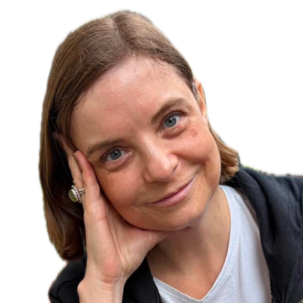
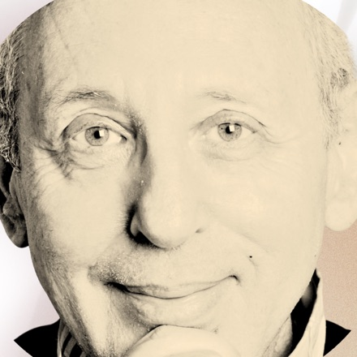

Safety
Do we feel safe together and know we can weather any storm?
Feeling safe is foundational. It lets everyone realize their greatest individual and collective generative potential.
By enhancing people's connection to their work and each other, we can together catalyze extraordinary organizational transformation.
North America · South America · Europe
You have been through every KPI, OKR, CPM, CRM, ROI and SOP. Still the question nags at the back of your head: what am I missing?
It is your people. Make them proud, excited and engaged, and the keys to the kingdom are yours. Serve them, and unleash their greatest generative, untapped potential today.
If you are not sure how, we can help.
Do we feel safe together and know we can weather any storm?
Feeling safe is foundational. It lets everyone realize their greatest individual and collective generative potential.
Are we empowered to respond to what is needed, in the instant that need arises?
The product of individual agency, authority, voice and empowerment to respond to emergent challenges, needs and opportunities in real time.
Do we experience joy in our work, and in each other?
The product of human beings realizing their greatest collective potential in service to a shared purpose.
Do we trust ourselves, and each other at work?
The product of accrued appreciation and reliance on each other, and of aligned thoughts, words and actions in service to a collective purpose.
Do we share ideas, insights and possibilities with others at work?
The fruit of human intuition, imagination and creativity. Each sharing extends to the whole an invitation to expansion.
We meet what arises from serenity and mindfulness. In Daoism this orientation is called the Way. People transform whatever has appeared together, in the present moment, with joy, openness and connection.
Mangroves grow in toxic water and turn it into an ecosystem. We work in that spirit.
Five natural energy fields shape the work. Open each one to see what it brings.
The field where something new can appear. Space holds purpose, meaning and emergence. It asks why the organization exists and what wants to come next.
Out of balance. When Space is missing, success is measured by growth and stability alone, and the organization has little sense of why it does what it does.
Agency, voice and the energy to act. Fire awakens people to their own value and generative potential. It inspires and never imposes.
Out of balance. Without Fire, energy lives in individual careers and the whole stays cold. Too much Fire burns people out within a few years.
Structure, focus and thought. Air gives shape to what Fire brings, through numbers, agreements and clear communication.
Out of balance. Air alone turns cold. The expertise is strong, yet few people feel drawn to it. Without Air, intensity has no focus.
Trust, feeling and adaptability. Water lets people let go, and lets an organization take the shape the moment asks for.
Out of balance. Without containment, Water rides one wave after another. When it freezes, people stay loyal out of habit and the connection is gone.
Safety, stability and generosity. Earth is the structure that holds, so that people can rest and create.
Out of balance. Too much Earth keeps a structure running long after anyone has asked whether it still serves.
We read an organization through all five at once. Much of our work lies in restoring the balance between them.
We step out of the boiler room with you. A map of the whole ecosystem gives an organization air and clarity. It reveals a field of opportunity and invites discernment.
From there, the present moment opens. What is emerging becomes visible, and so does what is alive.
Our work begins in that inner space, and the outer room follows.
Every engagement needs a first look at the client. This is ours: a different kind of due diligence that starts with the whole ecosystem around an organization.
We say constituency where others say stakeholder. Stakeholder points to a vested interest. Constituency points to an ecosystem of people, groups, communities, institutions and governments that the organization lives within.
A natural first step for any organization. We used it with a leadership program at a regional nonprofit as a beta, and it brought clarity and energy quickly.
Building something new, without a blueprint. We start from what is present in the room and let the venture take shape as real needs arise.
Purpose becomes clear as the founding group discovers it together. Structure, agreements and offerings arrive when the venture needs them. Decisions are made by consent, and the connection between the people co-creating is part of the work.
For start-ups, partnerships forming around a shared idea, and venture teams or incubators inside larger organizations.
Insight is the act of seeing into what is. We spend time with your people and listen to their experience and to what they have noticed but not been asked about.
From that we offer senior leaders a reading: where connection flows, where it is constrained, and how that shapes what the organization can do. You receive a diagnosis and the questions it opens. What follows is yours to design, from the culture, relationships and resources already present.
For senior leaders and organizational development teams.
Some conversations only happen when the conditions are right. We build a container with you, a set of conditions in which the questions that matter most to the people present can come into the open.
We develop the invitation together, a space holder holds each session, and a conversation with you follows each gathering. In one engagement with a global engineering firm, participants from operating units in more than 100 countries decided on their own to keep meeting, each bringing a colleague to the next gathering.
For leaders convening teams, programs or communities.
We work where organizational structure meets human awareness. The organization is considered a living organism, and we look at how Space, Fire, Air, Water and Earth are expressed in a leader, a team or the whole.
Where one field is over or under expressed, another can balance it. The resulting action plan is written in plain business language.
A five-day immersive program for leaders, one four-hour module per day, built on games, role play and shared inquiry. It widens perception of the opportunity field, strengthens relational intelligence and turns insight into tangible change.
Designed first for academic leaders and adaptable to other leadership groups.
You're the CEO. Each morning you wake up to your company, and each night you curl up with it. You see what is possible, what is, and the gap between the two. What if every employee felt the way you do?
The greatest untapped resource in your organization is how you draw your people into your world, your passion and your vision. Push the button, generate that pull.
Two questions. Nothing is stored or sent. This is a first impression, and a conversation goes much further.
Doug and Joanna are a unique pair that harmonize with each other. In the right moments, one shines where the other one is quiet and vice versa. … They hold the safe space. They ask the deeper questions. They notice and sense and are curious.
When you have a low day it pulls you up. It feels like it nurtures possibility and particularly when things feel hard it is so important.
Co-Founder and Co-Managing Director
A values-centered organizational consultant, entrepreneur and lifelong learner. His path runs through entertainment law, music management, life coaching and integral practice. He catalyzes change by and for the people who make up an organization.

Co-Managing Director
Board and strategy advisor and mentor with more than 25 years across marketing, leadership and organizational development. Founder of You'll Enjoy, she links business strategy with human insight and creative purpose.

Systemic Innovation Strategist and Co-Managing Director
Thirty-five years in engineering, thirty in applied systems science and twenty-five in organizational strategy and change. Founder of Value in 30 and LXD Lab. His strengths are deep listening, sensemaking and an obsession with co-creation.
Three slow breaths. Presence is where our work begins.